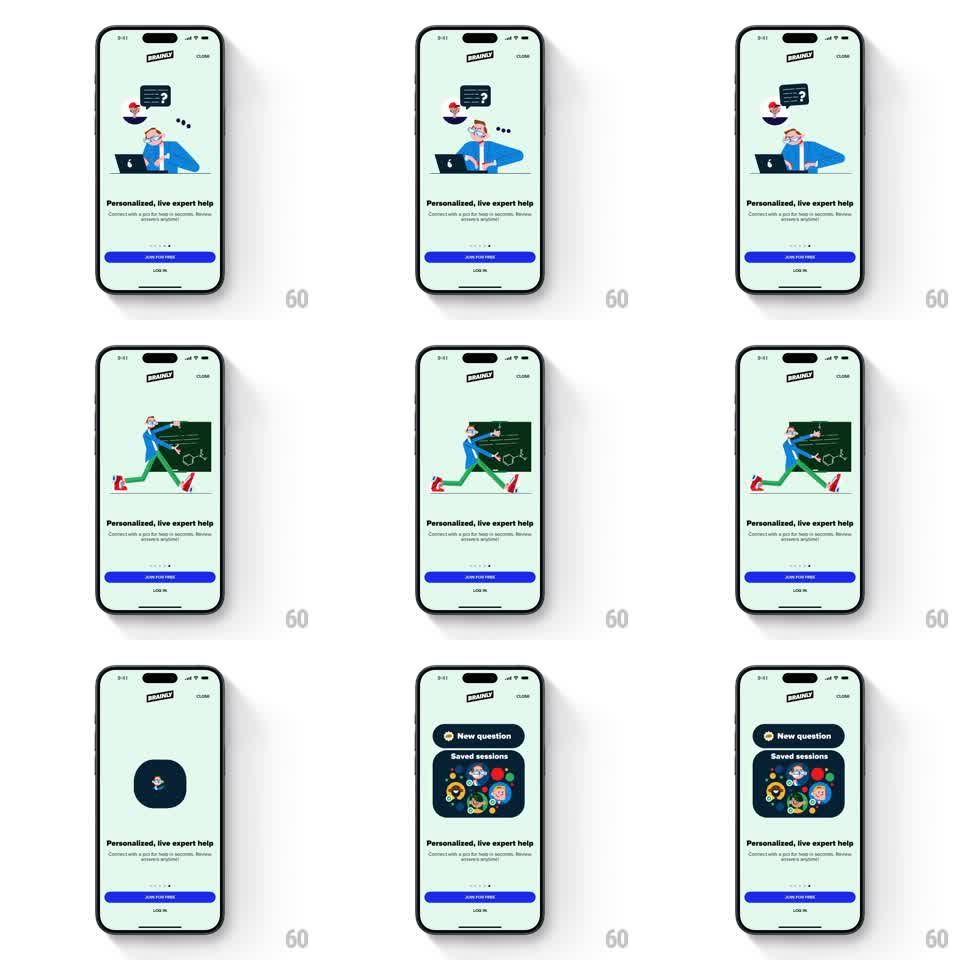

Media
Frame-by-frame

Rebuild this animation 1:1: Brainly's live-expert onboarding story - on a mint screen, a stuck-student illustration springs into a tutor at a chalkboard, which then morphs into a dark product card showing New question and Saved sessions.

Rebuild this animation 1:1: Brainly's live-expert onboarding story - on a mint screen, a stuck-student illustration springs into a tutor at a chalkboard, which then morphs into a dark product card showing New question and Saved sessions. ## Integration Integration: stack-agnostic spec - springs given as stiffness/damping, timed motions as duration + curve; map every value to your framework and animation library of choice. ## Scene Mint-green onboarding screen: Brainly logo, CLOSE, headline "Personalized, live expert help", page dots, JOIN FOR FREE and LOG IN fixed below. The stage cycles: (1) a student at a laptop with a dark question bubble and thought dots; (2) a tutor mid-stride pointing at a green chalkboard covered in formulas; (3) a dark rounded card - a mini app UI with a New question pill and a Saved sessions panel full of colorful avatar chips. ## Motion spec Pattern: springy scene transitions ending in a product-card morph. - Beat 1: the student's question bubble pops (spring stiffness ~380, damping ~17) and the thought dots pulse in sequence (3 dots, 150ms apart). - Transition to beat 2: beat 1 scales down and slides left while the tutor scene springs in from the right (stiffness ~300, damping ~20); the tutor's arm gesture loops (small rotation, 1.5s). - Morph to beat 3: the chalkboard's dark green expands into the dark card (color and corner-radius tween, ~400ms), the tutor's elements shrink away, and the New question pill plus avatar chips pop in staggered (80ms apart, spring). - Fixed UI never animates; holds between beats are ~1.5s. ## Calibration - The board-to-card color match is what makes the morph read - sample the same dark green for both. - The final card must look like real UI (crisp text, real chips), not a continuation of the illustration style. ## Reduced motion Crossfade the three beats (250ms), no springs, no traveling elements. ## Don't miss - The sequence narrows from playful illustration to actual product UI - that contrast is the point. - Avatar chips in the final card pop individually; a single group fade loses the liveliness.